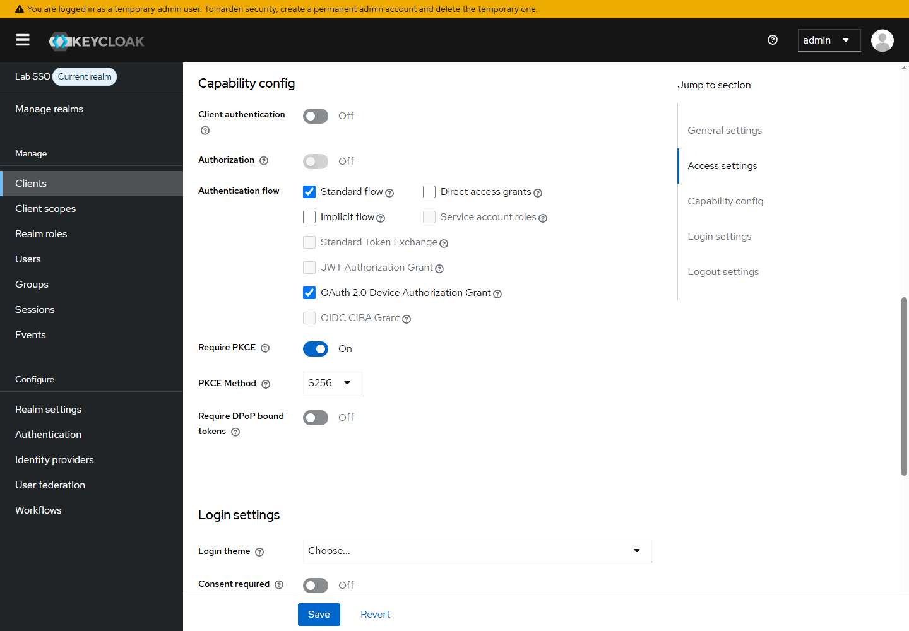
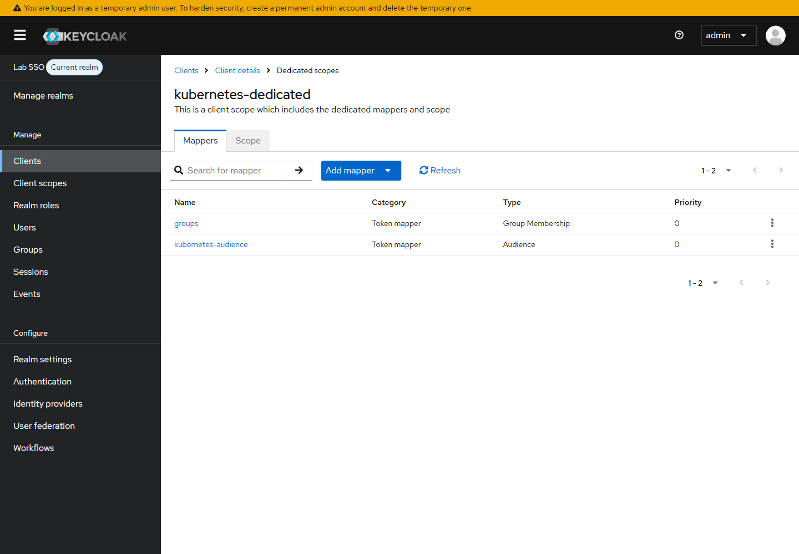
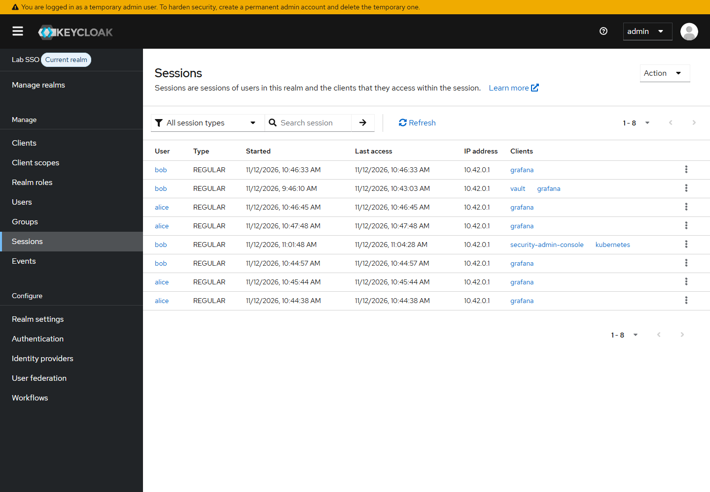
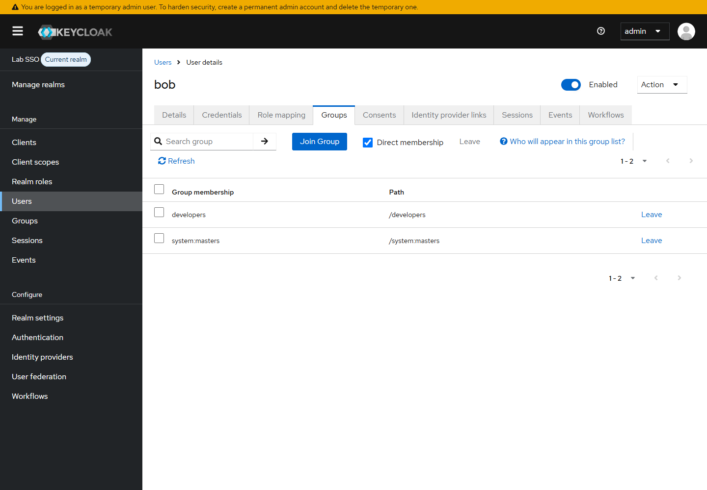

The kubeconfig that k3s writes is a cluster-admin credential. It works, it is convenient, and it is exactly the credential you should not copy to every developer. One file, one identity, no per-person revocation, and an audit log that only ever says system:admin.
The question that usually follows is: can Keycloak create a Kubernetes ServiceAccount for each user? Short answer: no. Keycloak is an OIDC provider. It signs identity tokens for humans; it does not create objects in the Kubernetes API.
What Keycloak can do is better. The API server authenticates the human directly against Keycloak, reads the user and group claims, and hands that identity to RBAC. The user gets a normal kubectl, a browser login, and only the permissions of their Keycloak groups. No ServiceAccount, no long-lived token in a kubeconfig.
This lab wires that chain on a four-node k3s cluster and then attacks it to show where the boundary actually is.
What gets built
| Component | Version | Role |
|---|---|---|
| Kubernetes | k3s v1.36.5+k3s1 |
API server OIDC, Traefik ingress |
| Keycloak | 26.8.2 |
realm lab, client kubernetes |
| kubelogin | v1.36.4 |
kubectl exec credential plugin |
| kubectl | v1.36.1 |
client on Windows |
| Namespace | guestbook |
developer-writable namespace |
| Groups | platform-admins, developers |
mapped to cluster-admin and edit |
The cluster already had Keycloak, Argo CD, Vault, Grafana, and Longhorn from earlier labs. This article reuses the lab realm and the existing alice and bob users. No second identity provider.
The trust chain
There are two separate decisions, and mixing them up is how SSO ends up granting too much.
- Authentication.
kubeloginopens a browser, the user signs in to Keycloak, and Keycloak returns an ID token. The token containspreferred_usernameand agroupsclaim. - Verification. The kube-apiserver checks the token signature against Keycloak's JWKS, checks that the issuer is exactly the configured URL, that the audience contains the client ID, and that the token has not expired. It then builds a Kubernetes user such as
oidc:bobwith groups such asoidc:developers. - Authorization. RBAC decides what
oidc:developerscan do. Keycloak never grants Kubernetes permissions by itself.
The prefix in oidc: is not decoration. Without it, a Keycloak group literally named system:masters would become the Kubernetes system:masters group, which is cluster-admin. The prefix keeps the identity provider's namespace separate from Kubernetes' built-in one.
Prerequisites
- The
k3s-labcontext fromC:\Users\C\.kube\k3s-lab.yaml. Every command below passes--kubeconfigexplicitly. - Admin access to the
labrealm in Keycloak. - The lab CA that signed the Keycloak ingress certificate.
- A namespace where a developer should be able to deploy. This lab uses
guestbook.
Confirm the cluster before changing anything:
kubectl --kubeconfig C:\Users\C\.kube\k3s-lab.yaml get nodes -o wide
NAME STATUS ROLES AGE VERSION INTERNAL-IP
k3s-agent-0 Ready <none> 19h v1.36.5+k3s1 10.10.10.12
k3s-agent-1 Ready <none> 18h v1.36.5+k3s1 10.10.10.13
k3s-agent-2 Ready <none> 18h v1.36.5+k3s1 10.10.10.14
k3s-server Ready control-plane 19h v1.36.5+k3s1 10.10.10.11
Step 1: Create the kubernetes client in Keycloak
The client is public, because kubectl runs on the user's machine and there is no safe place to embed a client secret. Security comes from PKCE and short-lived tokens, not from a shared secret in a kubeconfig.
The important settings:
- Client ID
kubernetes, public client, standard flow enabled. - PKCE required, method
S256. - Redirect URIs
http://localhost:8000/*andhttp://localhost:18000/*, the ports kubelogin listens on. - A group membership mapper that writes
groupsinto the ID token, with full path off. - An audience mapper that adds
kubernetesto the access token.

The group mapper is the one that decides whether RBAC can match anything. Keycloak can emit either developers or /developers. Kubernetes RBAC will not match oidc:/developers if the binding says oidc:developers, so turn "Full group path" off.

The equivalent Admin API calls:
$kc = "https://keycloak.10.10.10.11.nip.io"
$token = (Invoke-RestMethod -SkipCertificateCheck -Method Post `
-Uri "$kc/realms/master/protocol/openid-connect/token" `
-Body @{ client_id = "admin-cli"; username = "admin"; password = $adminPassword; grant_type = "password" }).access_token
$headers = @{ Authorization = "Bearer $token"; "Content-Type" = "application/json" }
$client = @{
clientId = "kubernetes"; publicClient = $true; standardFlowEnabled = $true
directAccessGrantsEnabled = $false; serviceAccountsEnabled = $false
redirectUris = @("http://localhost:8000/*", "http://localhost:18000/*")
webOrigins = @("+")
attributes = @{
"pkce.code.challenge.method" = "S256"
"oauth2.device.authorization.grant.enabled" = "true"
}
} | ConvertTo-Json -Depth 5
Invoke-RestMethod -SkipCertificateCheck -Headers $headers -Method Post `
-Uri "$kc/admin/realms/lab/clients" -Body $client
{
"name": "groups",
"protocol": "openid-connect",
"protocolMapper": "oidc-group-membership-mapper",
"config": {
"claim.name": "groups",
"full.path": "false",
"id.token.claim": "true",
"access.token.claim": "true",
"userinfo.token.claim": "true"
}
}
{
"name": "kubernetes-audience",
"protocol": "openid-connect",
"protocolMapper": "oidc-audience-mapper",
"config": {
"included.custom.audience": "kubernetes",
"id.token.claim": "false",
"access.token.claim": "true"
}
}
The audience mapper matters if you ever present the access token instead of the ID token. Keycloak's default access token audience is account, not your client ID, and the API server will reject it.
Step 2: Point the API server at Keycloak
k3s accepts API server flags through kube-apiserver-arg. The whole file on the server is:
kube-apiserver-arg:
- "oidc-issuer-url=https://keycloak.10.10.10.11.nip.io/realms/lab"
- "oidc-client-id=kubernetes"
- "oidc-username-claim=preferred_username"
- "oidc-username-prefix=oidc:"
- "oidc-groups-claim=groups"
- "oidc-groups-prefix=oidc:"
- "oidc-ca-file=/var/lib/rancher/k3s/server/tls/oidc-ca.crt"
- "oidc-signing-algs=RS256"
Two details are easy to miss.
The issuer URL must be the exact URL the browser and the API server both use. If Keycloak advertises a different issuer in its discovery document, every token is rejected. Check it before restarting:
curl.exe -sk https://keycloak.10.10.10.11.nip.io/realms/lab/.well-known/openid-configuration
"issuer": "https://keycloak.10.10.10.11.nip.io/realms/lab"
The API server must trust the CA that signed that HTTPS endpoint. The lab certificate is issued by a private CA, so point oidc-ca-file at it. The lab-tls secret contains a two-certificate chain; the second certificate is the CA:
$b64 = kubectl --kubeconfig C:\Users\C\.kube\k3s-lab.yaml -n kube-system `
get secret lab-tls -o jsonpath='{.data.tls\.crt}'
$pem = [Text.Encoding]::UTF8.GetString([Convert]::FromBase64String($b64))
$m = [regex]::Matches($pem, '-----BEGIN CERTIFICATE-----[\s\S]*?-----END CERTIFICATE-----')
$m[$m.Count - 1].Value | Set-Content -Encoding ascii C:\Users\C\.kube\lab-ca.crt
Copy that file to /var/lib/rancher/k3s/server/tls/oidc-ca.crt on the server, then restart k3s. On this single-server lab that is a short API outage, so keep the client-certificate kubeconfig as break-glass.
ssh -i C:\Users\C\.ssh\id_ed25519 ubuntu@10.10.10.11 "sudo systemctl restart k3s"
kubectl --kubeconfig C:\Users\C\.kube\k3s-lab.yaml get --raw /readyz
ok
The old system:admin path still works:
Username system:admin
Groups [system:masters system:authenticated]
If both OIDC and the client certificate work, you can recover from a Keycloak outage without locking yourself out.
Step 3: Give the user a kubectl that logs in
kubelogin is the exec credential plugin. Install a pinned release and verify the checksum before putting it on PATH:
Invoke-WebRequest -UseBasicParsing `
https://github.com/int128/kubelogin/releases/download/v1.36.4/kubelogin_windows_amd64.zip `
-OutFile $env:TEMP\kubelogin.zip
(Get-FileHash $env:TEMP\kubelogin.zip -Algorithm SHA256).Hash
Expand-Archive $env:TEMP\kubelogin.zip $env:TEMP\kubelogin
Copy-Item $env:TEMP\kubelogin\kubelogin.exe C:\Users\C\bin\kubelogin.exe
The kubeconfig is the stock cluster entry plus an exec block:
apiVersion: v1
kind: Config
clusters:
- name: k3s-lab
cluster:
server: https://10.10.10.11:6443
certificate-authority-data: <same value as k3s-lab.yaml>
users:
- name: oidc
user:
exec:
apiVersion: client.authentication.k8s.io/v1
command: C:\Users\C\bin\kubelogin.exe
args:
- get-token
- --oidc-issuer-url=https://keycloak.10.10.10.11.nip.io/realms/lab
- --oidc-client-id=kubernetes
- --certificate-authority=C:\Users\C\.kube\lab-ca.crt
- --grant-type=authcode
- --oidc-pkce-method=S256
- --skip-open-browser
interactiveMode: IfAvailable
contexts:
- name: k3s-lab-oidc
context:
cluster: k3s-lab
user: oidc
current-context: k3s-lab-oidc
--skip-open-browser prints http://localhost:8000/ instead of opening a browser. The lab used that so the login page could be driven in BrowserOS. On a normal desktop, drop the flag and kubelogin opens the browser itself.
The token cache is on disk under ~/.kube/cache/oidc-login. The cache key includes the plugin arguments, not just the issuer and client. Changing --grant-type or --oidc-pkce-method forces a second login even for the same user. That is expected; it is not a broken cache.
Step 4: Map groups to RBAC
Two bindings make the point. platform-admins gets cluster-admin in this lab. developers gets edit only in guestbook.
apiVersion: rbac.authorization.k8s.io/v1
kind: ClusterRoleBinding
metadata:
name: oidc-platform-admins
subjects:
- kind: Group
name: oidc:platform-admins
apiGroup: rbac.authorization.k8s.io
roleRef:
kind: ClusterRole
name: cluster-admin
apiGroup: rbac.authorization.k8s.io
---
apiVersion: rbac.authorization.k8s.io/v1
kind: RoleBinding
metadata:
name: oidc-developers-edit
namespace: guestbook
subjects:
- kind: Group
name: oidc:developers
apiGroup: rbac.authorization.k8s.io
roleRef:
kind: ClusterRole
name: edit
apiGroup: rbac.authorization.k8s.io
edit is a ClusterRole. A RoleBinding may reference a ClusterRole, but the roleRef.kind must say ClusterRole. Pointing it at a namespaced Role named edit fails with role.rbac.authorization.k8s.io "edit" not found.
Check the policy before involving a browser at all, by impersonating the identities:
kubectl --kubeconfig C:\Users\C\.kube\k3s-lab.yaml auth can-i create pods -n guestbook `
--as=oidc:alice --as-group=oidc:platform-admins
kubectl --kubeconfig C:\Users\C\.kube\k3s-lab.yaml auth can-i create pods -n guestbook `
--as=oidc:bob --as-group=oidc:developers
kubectl --kubeconfig C:\Users\C\.kube\k3s-lab.yaml auth can-i delete nodes `
--as=oidc:bob --as-group=oidc:developers
yes
yes
no
Impersonation proves the RBAC graph. It does not prove that Keycloak issues those groups. The next step does.
Step 5: Log in as a real user
The first attempt used the device-code grant and failed twice, in a useful order:
unauthorized_client (Client is not allowed to initiate OAuth 2.0 Device Authorization Grant)
after enabling the grant on the client:
invalid_request (Missing parameter: code_challenge_method)
Keycloak enforces PKCE on this client, and kubelogin's device-code request does not carry a PKCE challenge. The working path is the authorization-code flow with PKCE, which is also the better choice for a desktop user. kubectl prints a local URL, the browser completes the login, and the callback lands on localhost:8000.

kubectl --kubeconfig C:\Users\C\.kube\k3s-lab-oidc.yaml auth whoami
Username oidc:bob
Groups [oidc:developers system:authenticated]
That is the whole point. The audit identity is the human, not a shared admin and not a ServiceAccount. Now the same token goes through RBAC:
kubectl --kubeconfig C:\Users\C\.kube\k3s-lab-oidc.yaml -n guestbook get pods
kubectl --kubeconfig C:\Users\C\.kube\k3s-lab-oidc.yaml -n guestbook auth can-i create deployments
kubectl --kubeconfig C:\Users\C\.kube\k3s-lab-oidc.yaml auth can-i delete nodes
kubectl --kubeconfig C:\Users\C\.kube\k3s-lab-oidc.yaml -n kube-system auth can-i get secrets
NAME READY STATUS RESTARTS AGE
guestbook-ui-5d6468fd55-pmpjm 1/1 Running 0 12h
yes
no
no
A real request to the forbidden resource produces the useful error:
Error from server (Forbidden): nodes is forbidden: User "oidc:bob" cannot list
resource "nodes" in API group "" at the cluster scope
Step 6: Try to spoof system:masters
A group mapper without a prefix is a privilege-escalation bug waiting for someone to create a group with the right name. To prove the prefix works, add bob to a Keycloak group literally named system:masters.

After a fresh login (the token cache still holds the old groups, so clear it or use a new cache directory), the token contains the group, but the API server prefixes it:
Username oidc:bob
Groups [oidc:developers oidc:system:masters system:authenticated]
kubectl --kubeconfig C:\Users\C\.kube\k3s-lab-oidc.yaml auth can-i delete nodes
kubectl --kubeconfig C:\Users\C\.kube\k3s-lab-oidc.yaml auth can-i '*' '*'
no
no
The counterfactual makes the boundary obvious. If the group arrived unprefixed, the same user would be cluster-admin:
kubectl --kubeconfig C:\Users\C\.kube\k3s-lab.yaml auth can-i delete nodes `
--as=oidc:bob --as-group=system:masters
yes
This is why --oidc-groups-prefix=oidc: is mandatory, not cosmetic.
Can Keycloak create a ServiceAccount per user?
No, and the token claims show why the two identities cannot be substituted for each other. Mint a normal ServiceAccount token and decode its payload:
$jwt = kubectl --kubeconfig C:\Users\C\.kube\k3s-lab.yaml -n guestbook `
create token default --duration=10m
sa_iss=https://kubernetes.default.svc.cluster.local
sa_sub=system:serviceaccount:guestbook:default
sa_aud=https://kubernetes.default.svc.cluster.local k3s
Compare that with the Keycloak identity: the issuer is the lab realm URL, the subject is bob, and the groups come from the realm. The ServiceAccount token is signed by the API server's service-account key; the Keycloak token is signed by Keycloak. Neither side can mint the other's token. Keycloak also has no Kubernetes API client, so it cannot create the ServiceAccount object in the first place.
If you still want one ServiceAccount per human, you have to build and operate a sync controller:
- Read users (or a group) from the Keycloak Admin API.
- Create a
ServiceAccountand aRoleBindingper user. - Mint tokens through the TokenRequest API, because Kubernetes 1.24+ no longer auto-creates permanent token Secrets.
- Rotate or reissue those tokens before they expire, and delete the ServiceAccount to revoke access.
- Accept that audit logs now say
system:serviceaccount:...instead of the human, and that a token copied to a laptop bypasses the Keycloak login and MFA.
That is a lot of custom control-plane code to reach a worse place than OIDC. ServiceAccounts are for workloads. Humans already have a first-class RBAC subject: User and Group.
If the real requirement is short-lived per-user credentials for non-kubectl clients, look at Pinniped or Teleport rather than a home-grown ServiceAccount factory.
Traps worth remembering
- Device flow and PKCE disagree. Keycloak can enforce PKCE while kubelogin's device-code request omits
code_challenge_method. Use the authorization-code flow, or do not enable the device grant. - Full group path.
/developersanddevelopersare different RBAC subjects. Turn the path off in the mapper. - Access-token audience. Keycloak defaults to
account. Add the audience mapper, or rely on the ID token. - Group prefix. Without
oidc:, a Keycloak group can collide withsystem:masters. - Immutable
roleRef. A RoleBinding'sroleRefcannot be edited in place. Delete and recreate it. - Multi-document YAML. Two manifests concatenated without
---are not two manifests.kubectl applywill not do what you expect. - Issuer reachability and trust. The API server fetches discovery over HTTPS using its own CA bundle. Test with
curl --cacertfrom the server before restarting k3s. - One server means one restart. A control-plane restart is an API outage. Keep the break-glass kubeconfig.
Security boundaries and production gaps
This is a lab, and the shortcuts are visible:
platform-adminsis bound tocluster-admin. In production, bind a scoped ClusterRole and keep cluster-admin for a break-glass group.- Keycloak runs as a single pod with a single Postgres pod. Production needs HA, backups, and a tested restore.
- The lab CA is private and the ingress certificate is not publicly trusted. Production uses a real CA and rotates it before
oidc-ca-fileexpires. - JWTs are stateless. Disabling a user in Keycloak stops new logins; an already-issued token remains valid until
exp(five minutes by default in Keycloak, but check your realm settings). Short token lifetimes are the revocation mechanism. - The client-certificate kubeconfig still exists. Protect it like a root credential, and do not ship it to users.
- Enable API server audit logging and ship it somewhere durable. The value of OIDC is that the audit entry says
oidc:bob, which only helps if you keep the log. - Enforce MFA in Keycloak for the groups that can reach the cluster. OIDC alone does not require a second factor.
Cleanup
Remove the lab bindings and the test group membership first, then the client and the API server configuration:
kubectl --kubeconfig C:\Users\C\.kube\k3s-lab.yaml delete clusterrolebinding oidc-platform-admins
kubectl --kubeconfig C:\Users\C\.kube\k3s-lab.yaml -n guestbook delete rolebinding oidc-developers-edit
Remove bob from the system:masters group in Keycloak, delete the kubernetes client, and remove the kube-apiserver-arg block from /etc/rancher/k3s/config.yaml. Restart k3s, confirm /readyz, and delete the local OIDC kubeconfigs and ~/.kube/cache/oidc-login.
References
- Kubernetes, Authenticating with OIDC
- Kubernetes, Service Accounts
- k3s, Server configuration
- int128, kubelogin
- Keycloak, Server Administration Guide